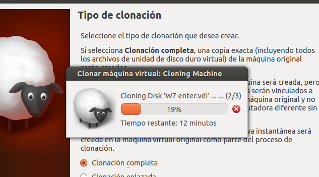

- Módulo: Sistemas Operativos
- Título del trabajo PDC WinServer
- Componentes del grupo: Isabel Quintero Sánchez
- Curso Académico: 2013/2014
- Fecha de entrega: 8 de Abril de 2014
Instalamos Windows 2008 Server Enterprise y como servidores DNS pondremos al propio Windows2008Server (127.0.0.1), y a FRY (172.16.1.1).

Controlador de dominio
Instalamos el DA(Directorio Activo) para guardar la información de nuestro dominio.Después, como cada PDC se identifica con su nombre de dominio, el cuál debe ser único, elegiremos un nombre corto para el nuestro. ("QUINTERO1W.IDP")
Crear los siguientes grupos de dominio, y usuarios de dominio:
Primero creamos los grupos

Y, en segundo lugar unimos los usuarios a sus respectivos grupos.

Instalamos una MV (W7 Enterprise) y luego la clonamos que actuarán de clientes o equipos del dominio.
Cada cliente Windows7 debe tener un nombre de equipo sencillo. Para el primero: "Quintero2a" y para el segundo: "Quintero2b"
El cliente debe tener como DNS1 la IP del PDC, y como DNS2 a otro servidor DNS (como por ejemplo a FRY 172.16.1.1).


Ahora vamos a unir el equipo cliente al dominio.


Hacemos las comprobaciones.